Сейчас мы станеммамкинымивайбкодерами
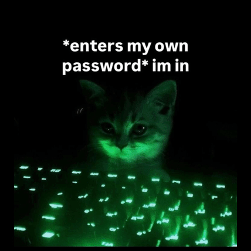
Где я вайбкожу
Claude
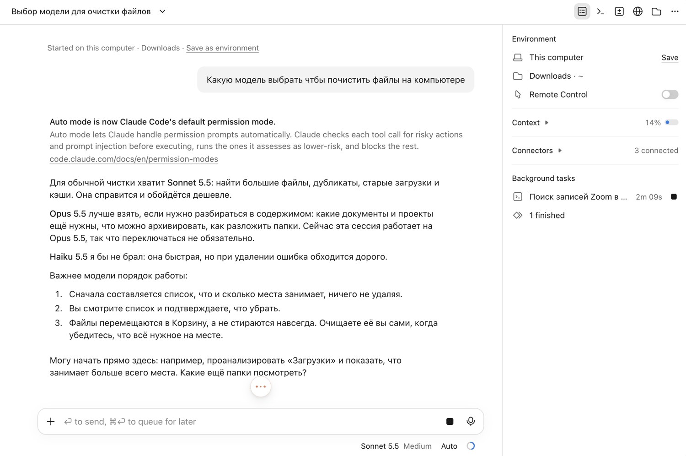
Codex
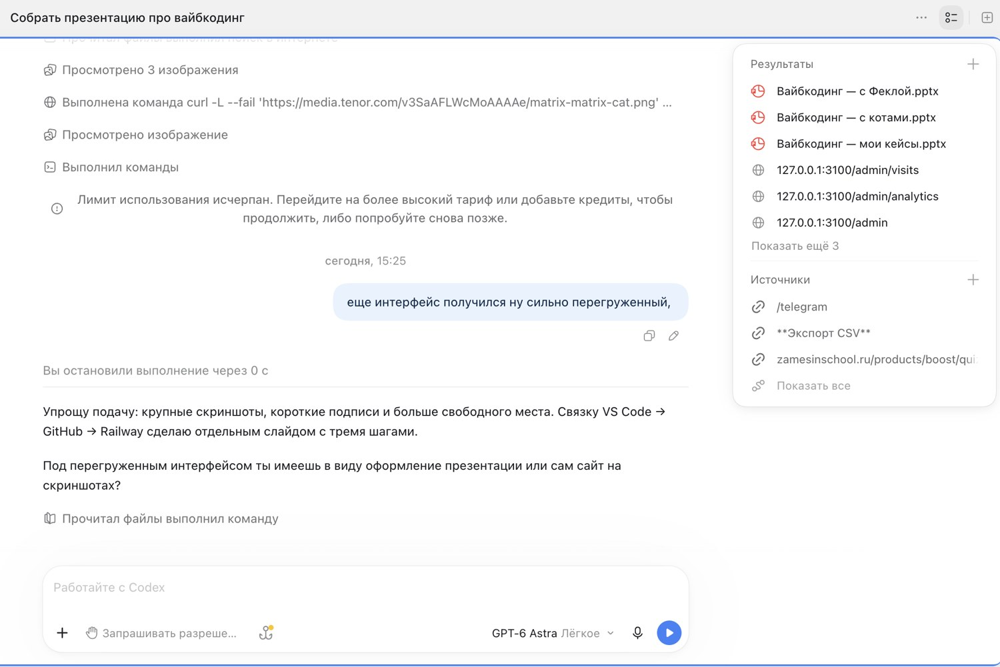
Плагины в ChatGPT
Почта, календарь, встречи, Notion, GitHub
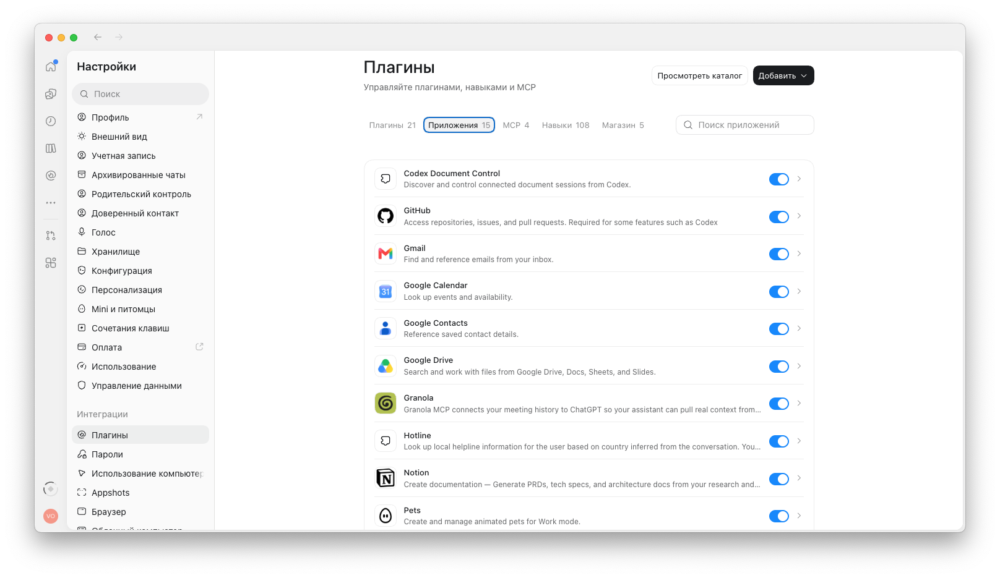
Плагины собирают всё в одно окно
Сервисы обмениваются данными через чат
Собери итоги недели
Как я ищу работу
Чтобы поиск не превратился в ещё одну работу
Как оцениваю вакансию
Веса пока черновые
Можно влиять на стратегию, есть команда и ресурсы
Про команду или зарплату ничего нет: спросить, а не додумывать
Под видом руководителя ищут того, кто сам сделает весь контент
У меня появился свой аутричер на Codex
Предлагает мои услуги, пока я стесняюсь
уже отправил
Отказ
Такой маркетолог у нас уже естьЭто частично подтвердило гипотезу услуги
А ещё я начала делать музыку
Собрала себе курс по Ableton
со своей LMS
и своим сайтом
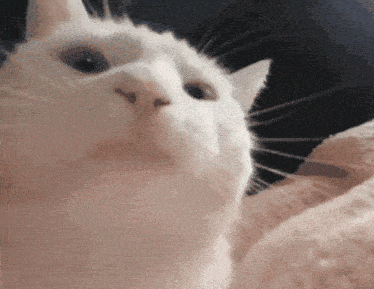
Что внутри курса
От первого запуска до трека на SoundCloud
Ableton: первый вариант дизайна
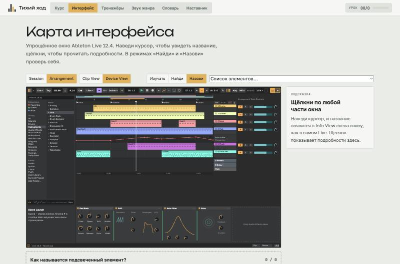
Ableton: весь сайт курса
Можно кликать и листать мышью
Ableton: как курс попал в интернет
GitHub
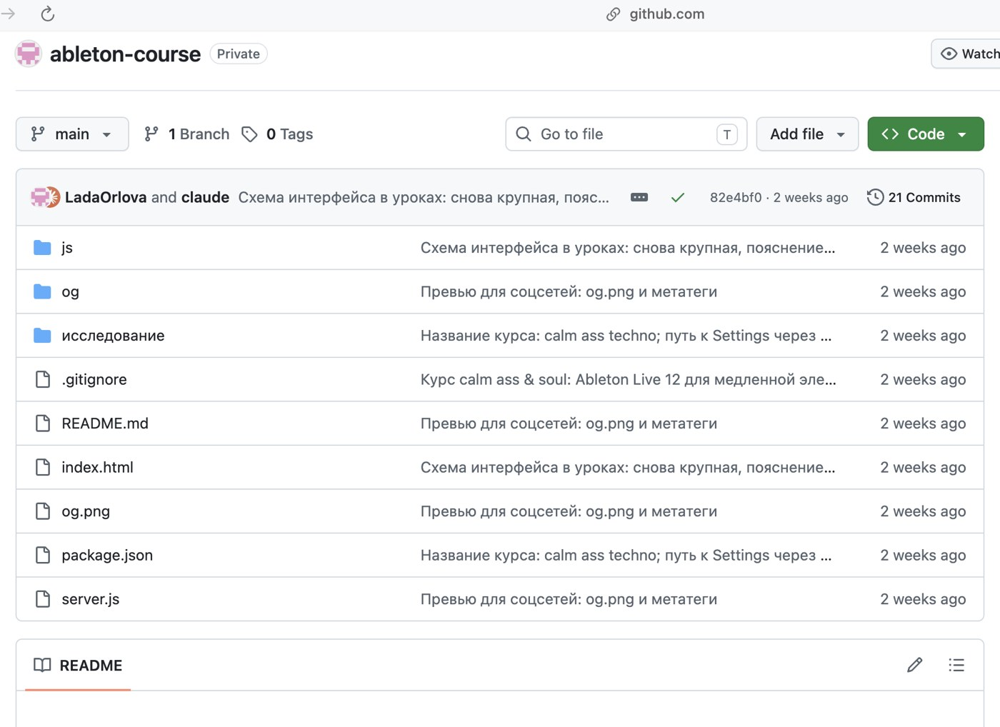
Здесь лежит код
Railway
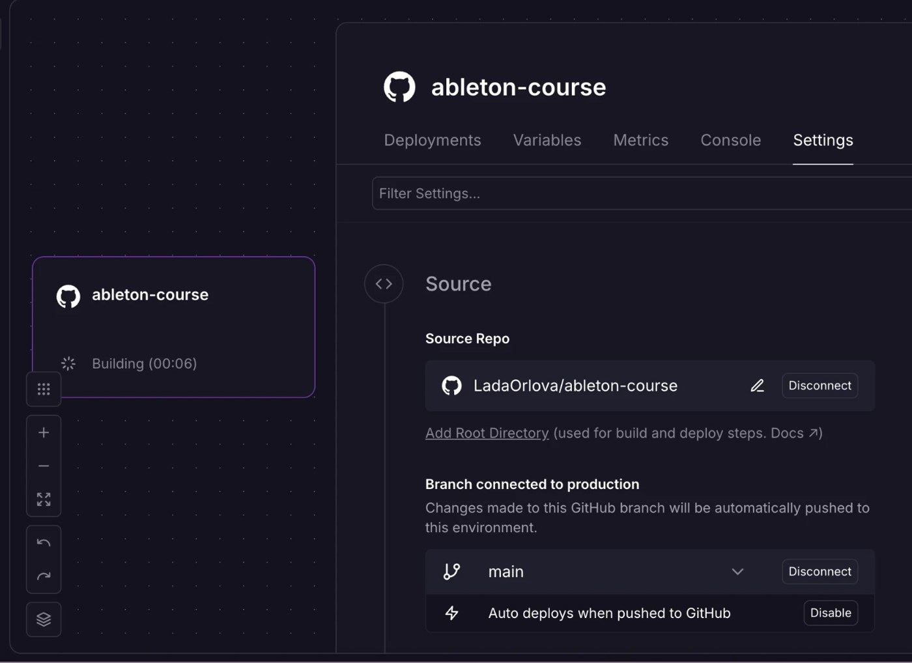
Здесь сайт работает
Сайт
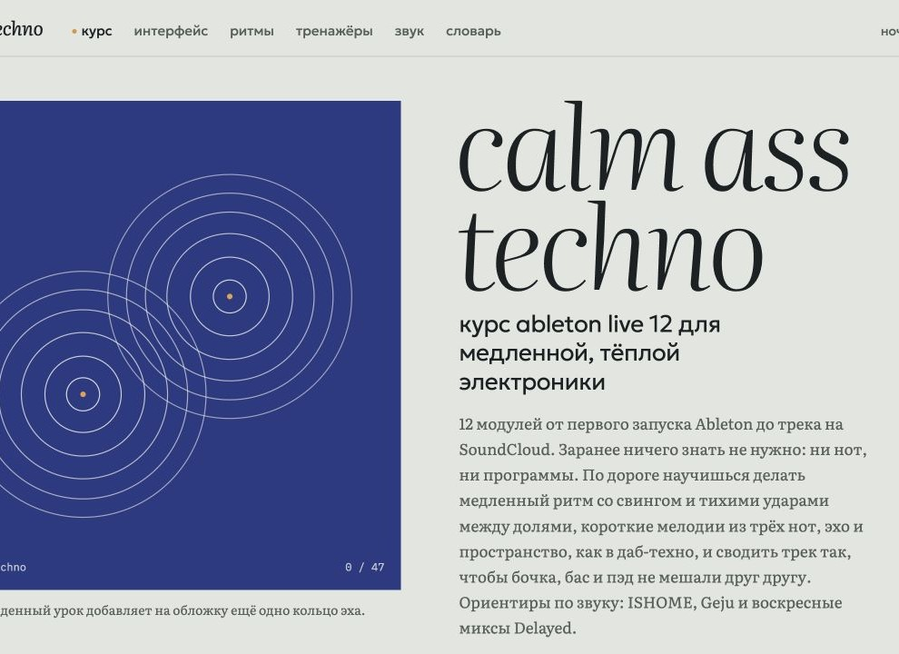
А это ссылка на него
Сайт школы Замесина

База знаний: гайды и видео

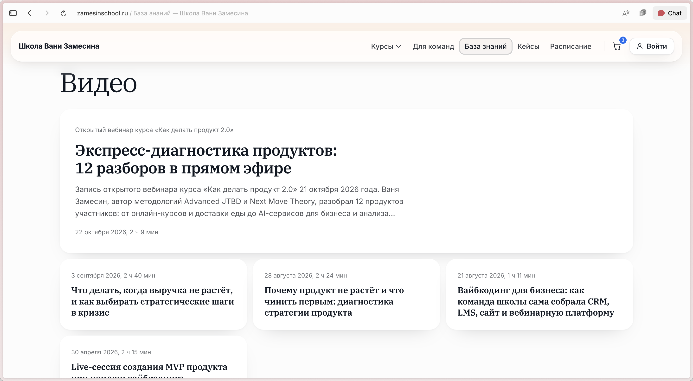
Выбор продуктов и корзина
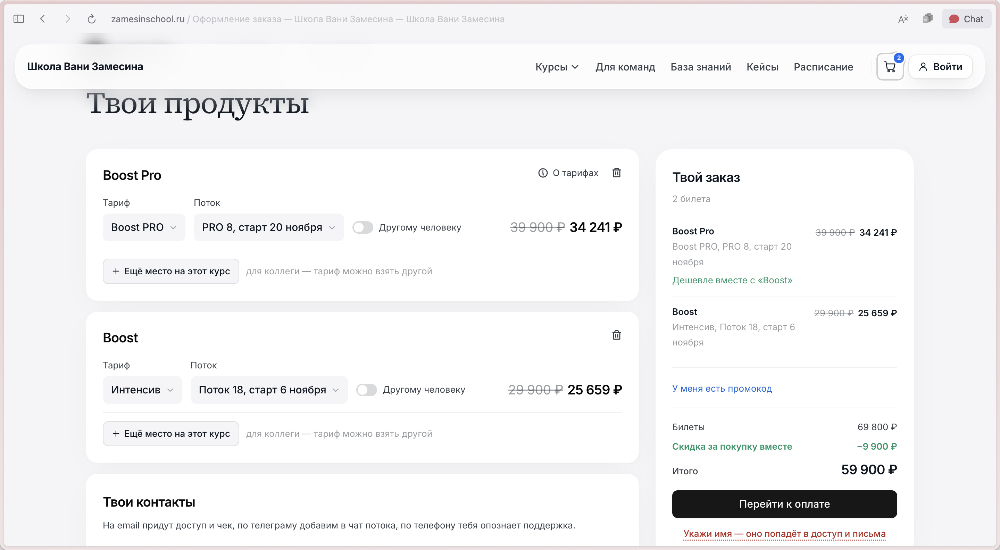
Статьи для сайта школы
Раздел со статьями
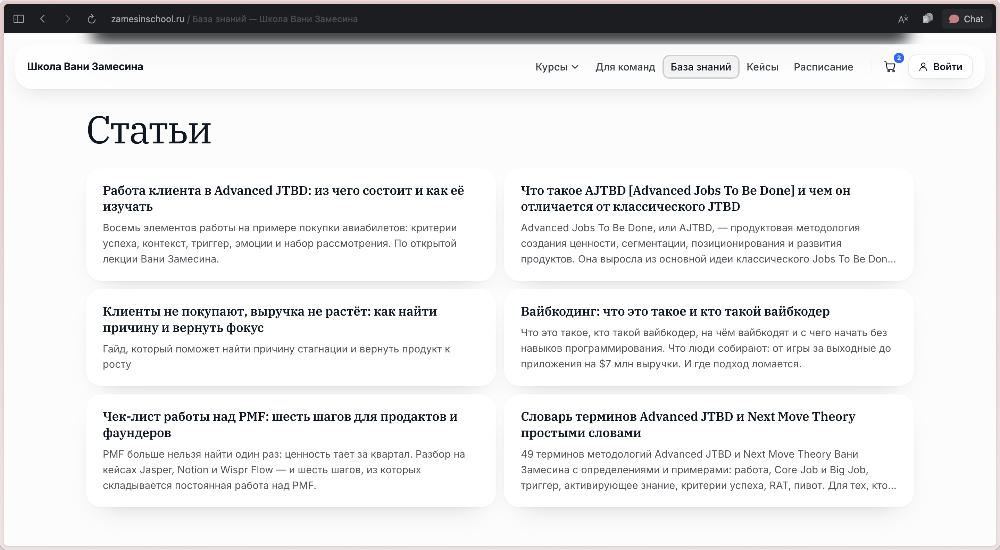
Как я пишу статьи
Сначала начинка и спрос, потом два круга критики и правок
Начинка
Скачанный телеграм-канал эксперта, база знаний, наработки, методология. Всё в md-файлах
Спрос
Прошу агента собрать реальные запросы в Вордстате
Агент пишет статью со скиллами
Эмулированные читатели
30 или 100 ненастоящих людей говорят, что непонятно
Злой редактор
Ищет нейрослоп и всё, что сделано плохо
Статья без нейрослопа
Кажется, что работы много. На деле нет
Чувствую себя героем Пелевина, который оживил кукол мантрами и воссоздал бой Миямото Мусаси и Сасаки Кодзиро
Как я делаю скиллы
Чтобы нейросеть работала по вашей методологии, а не «вообще»
Даю любую книгу или методологию
Книгу, гайд или архив своих текстов
Дешёвые агенты читают по частям
Агент режет текст на части, каждую целиком читает свой агент на Haiku. Так недорого и быстро
Агент собирает гайдлайн
Принципы, правила и ошибки из всех частей в одном документе. Спорные места сверяет с источником
Агент собирает скилл и проверяет
Прогоняет на примере и сам правит слабые места
Например, скилл «storybrand»
- Собирает брендарий по описанию бизнеса
- Проверяет, понятен ли текст за 5 секунд
- Пишет и переписывает лендинги и письма
Возьмите любую книгу или свои тексты, и агент соберёт такой же скилл
Админка: заказы
Демонстрационные данные
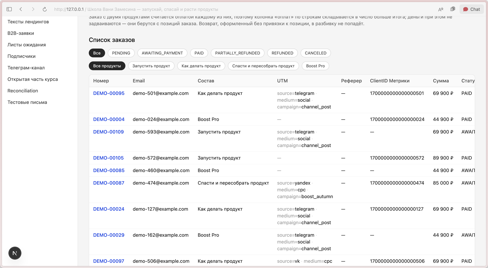
Аналитика: продажи и источники
Демонстрационные данные
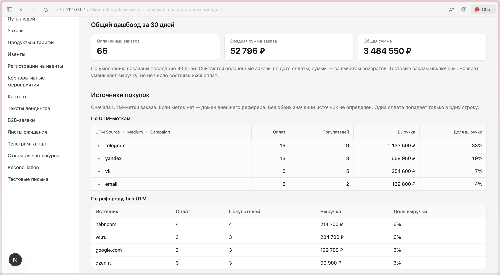
CJM: путь клиента
Демонстрационные данные
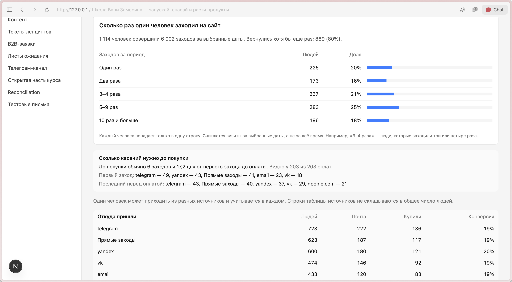
CJM: путь клиента по большим данным
Из разрозненной обратной связи в одну карту
Что показала карта: шесть выводов
Каждый подтверждён несколькими источниками
Решение созревает до лендинга
Медиана в боте до покупки. Telegram Вани привёл 47% покупателей
«Сейчас» запускает окно, а не боль
Назвали событие, которое запустило покупку: освободилось время или деньги, вышел анонс
Курс нанимают под рабочую задачу
Бизнес-задача против 16% у карьеры, потоки 56–59
Бесплатный модуль продаёт сильнее всего
Прошли его покупатели, среди подписчиков с почтой только 14%
Больше всего теряем на «не сейчас»
Заказов КДП 2.0 не оплачены. Вернуть этих людей к следующему потоку нечем
Главный страх: не применю к своему
Против 8% у «теории без практики». Цены не боится никто
CJM «Как делать продукт»: отчёт целиком
Листается мышью
SEO-аудит сайта школы
Повторный обход 27 августа, после первых правок
здоровье сайта
Что нашли, по цене ошибки
21 страница не попала в sitemap, хотя индексируется
19 страниц без canonical: ссылка с UTM создаёт дубль
Старые адреса Boost, Boost Pro и КДП ведут на личную страницу, накопленный вес теряется
54 заголовка обрезаются в выдаче: у кейсов до 178 знаков при 60–65 видимых
30 описаний вдвое-втрое длиннее нужного
SEO-аудит: отчёт целиком
Листается мышью
Бот Фекла
в 7 рубриках
Собирает посты в персональный дайджест
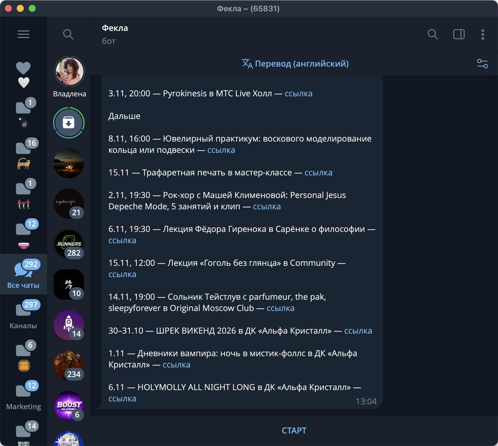
Как устроена Фекла
VS Code
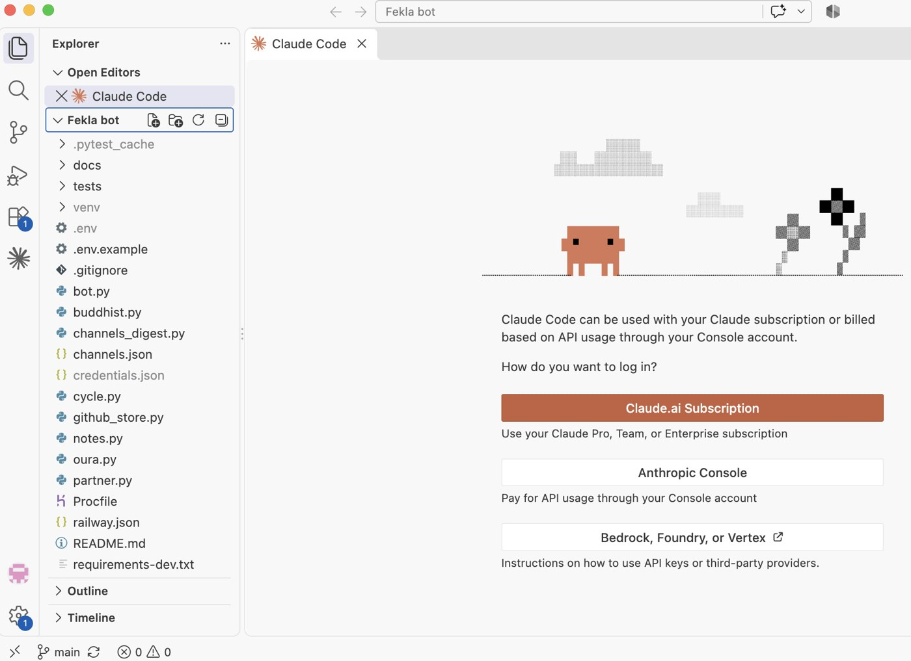
Здесь вайбкожу бота
GitHub
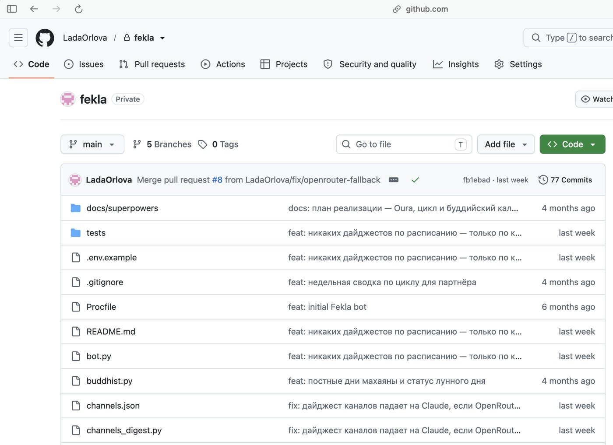
Здесь лежит код
Railway
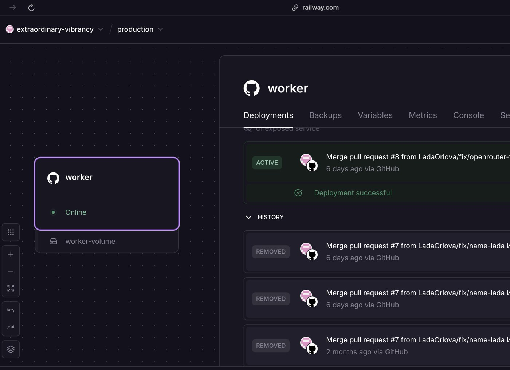
Здесь бот работает
Granola: заметки по встречам
Ещё из полезных нейроночек
Расшифровывает разговор
Собирает конспект и договорённости
Помогает вспомнить, что обсуждали
Квиз «Вайбкодер ли ты?»
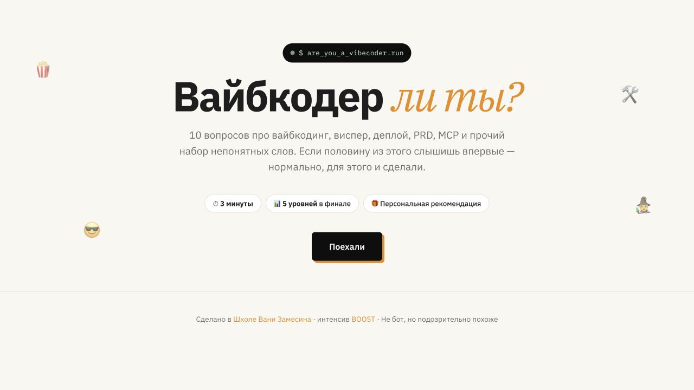
Сайт «Мари, куда идём?»
Личный каталог Москвы: 301 место, 2014 событий, 590 лекций